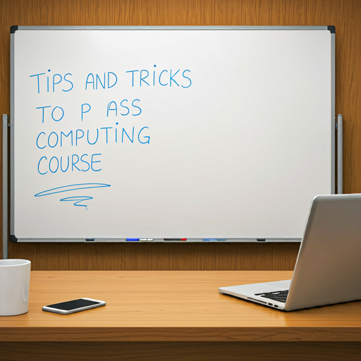

Tips and Tricks to Pass Computing Course
September 31, 2024 by Leah-Jay Holness
Struggling with your computing course? Don't worry, you're not alone. Many students find computer science challenging. However, with the right approach and dedication, you can excel. Here are some tips and tricks to help you succeed
Attendance is Key, Regularly attending lectures is crucial for understanding the course material. Pay attention to the instructor's explanations, take notes, and ask questions if you're unsure about anything. Additionally, make the most of tutorials. These sessions provide opportunities to practice problem-solving and get personalized help from teaching assistants.
Practice Makes Perfect, In computing, practice is essential. Complete all assigned homework and exercises diligently. The more you practice, the better you'll become at coding and problem-solving. Consider working on additional coding challenges or projects outside of class to further enhance your skills. Don't be afraid to seek help from classmates or online resources if you get stuck.